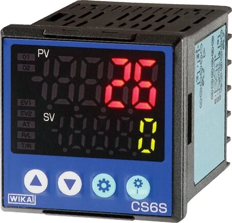
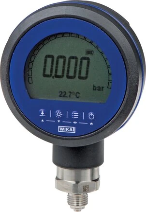

Bộ điều khiển nhiệt độ gắn tủ (digital temperature controller / Temperaturregler für Schalttafeleinbau) nhận tín hiệu từ cảm biến nhiệt, hiển thị giá trị dạng số và điều khiển ngõ ra relay theo ngưỡng cài đặt — dùng để bật/tắt gia nhiệt, làm mát hoặc phát cảnh báo. Đây là mắt xích biến một cảm biến Pt100 đơn lẻ thành một vòng điều khiển nhiệt hoàn chỉnh trong tủ điện. Fast Group Engineering là đại lý cung cấp hàng chính hãng WIKA (Germany) tại Việt Nam.

Gợi ý chọn nhanh
- Cần đọc nhiệt độ tại chỗ hoặc đưa tín hiệu nhiệt về hệ thống.
- Cần chọn bimetal, RTD Pt100, transmitter hoặc thermowell.
- Cần thay thế theo chiều dài thân nhúng và kiểu chân.
- Dải nhiệt, chiều dài stem và đường kính thân.
- Kiểu chân, ren, vật liệu và môi chất.
- 2/3/4-wire, output 4-20 mA hoặc yêu cầu thermowell.
- Danh mục đồng hồ nhiệt độ WIKA.
- Bài bimetal thermometer.
- Bài RTD Pt100 và thermowell.
Tóm tắt nhanh
- Nhận đầu vào Pt100 (RTD) và/hoặc thermocouple, một số bản nhận cả 4–20 mA.
- Hiển thị số + relay output điều khiển ON/OFF theo setpoint.
- Có hysteresis và (tùy model) chế độ cảnh báo cửa sổ cao/thấp.
- Lắp mặt tủ (panel) với kích thước khoét chuẩn: 96×96, 96×48, 48×48 mm.

Các chức năng chính
| Chức năng | Mô tả |
|---|---|
| Hiển thị | Giá trị nhiệt độ dạng số, đọc rõ trên mặt tủ |
| Setpoint | Ngưỡng điều khiển cài đặt được |
| Relay output | Bật/tắt gia nhiệt, làm mát hoặc bơm |
| Hysteresis | Chống đóng/cắt liên tục quanh ngưỡng |
| Cảnh báo | Ngưỡng alarm cao/thấp (tùy model) |
Điều khiển ON/OFF theo ngưỡng — ví dụ cụ thể
Giả sử bạn gia nhiệt một bồn chứa: setpoint = 60°C, hysteresis = 2°C. Bộ điều khiển sẽ bật gia nhiệt khi nhiệt độ xuống dưới 58°C và tắt khi đạt 60°C. Khoảng hysteresis 2°C này chính là "vùng đệm" giúp relay không đóng/cắt liên tục mỗi khi nhiệt độ dao động nhẹ quanh ngưỡng — nhờ đó tiếp điểm relay và điện trở gia nhiệt bền hơn nhiều. Hysteresis quá nhỏ gây rung relay; quá lớn khiến nhiệt độ dao động rộng. Chọn giá trị hợp lý theo quán tính nhiệt của hệ thống.
ON/OFF hay PID — chọn loại nào?
Với các quá trình đơn giản (giữ nước nóng, sấy, bồn dầu) thì điều khiển ON/OFF là đủ, rẻ và dễ vận hành. Với quá trình nhạy, cần giữ nhiệt ổn định sát điểm đặt và hạn chế vọt lố (lò nung, ép nhựa, phòng thí nghiệm), nên chọn bản có PID để điều chỉnh công suất mượt thay vì bật/tắt dứt khoát.
Chọn đúng đầu vào cảm biến
- Pt100 (RTD): chính xác, dải trung bình — phổ biến nhất.
- Thermocouple (TC): cho dải nhiệt rất cao (lò, khói thải).
- 4–20 mA: nhận tín hiệu từ temperature transmitter khi cảm biến lắp xa.
Hãy chọn controller có input tương thích với loại và kiểu đấu của cảm biến hiện có (ví dụ Pt100 2/3/4 dây).
Lưu ý khi lắp đặt & đấu nối
Chừa đúng kích thước khoét tủ theo model; đi dây tín hiệu cảm biến tách khỏi cáp động lực để tránh nhiễu; và bố trí relay/SSR phù hợp công suất tải — bộ điều khiển chỉ phát tín hiệu điều khiển chứ không mang trực tiếp dòng tải lớn của điện trở gia nhiệt.
Cách chọn nhanh (Checklist)
- [ ] Loại đầu vào: Pt100 / TC / 4–20 mA.
- [ ] Số & loại ngõ ra: relay, SSR, số kênh.
- [ ] Kích thước khoét tủ: 96×96 / 96×48 / 48×48 mm.
- [ ] Nguồn cấp: 24 VDC hay 220 VAC.
- [ ] Chế độ điều khiển: ON/OFF hay PID, có alarm không.
- [ ] Dải nhiệt hiển thị và điều khiển.
Ứng dụng điển hình
- Điều khiển gia nhiệt lò, bồn, đường ống.
- Điều khiển làm mát/quạt theo nhiệt độ.
- Cảnh báo quá nhiệt trong tủ điều khiển.
- Kết hợp Pt100 + controller thay cho giải pháp rời rạc.
PID là gì và khi nào thực sự cần?
Điều khiển PID (Proportional – Integral – Derivative) không bật/tắt dứt khoát như ON/OFF mà điều chỉnh mức công suất theo sai lệch giữa nhiệt độ thực và điểm đặt. Thành phần P phản ứng theo độ lệch hiện tại, I bù sai số tích lũy để triệt tiêu độ lệch tĩnh, còn D hãm lại khi nhiệt độ thay đổi nhanh nhằm giảm vọt lố. Kết quả là nhiệt độ được giữ sát setpoint, ổn định và ít dao động. PID thực sự cần cho lò nung, máy ép nhựa, buồng nhiệt hay các quá trình mà dao động nhiệt vài độ đã ảnh hưởng chất lượng. Ngược lại, với bồn nước nóng hay sấy thông thường, ON/OFF đơn giản và tiết kiệm hơn.
Chọn kích thước tủ và nguồn cấp
| Kích thước khoét (mm) | Đặc điểm | Thường dùng |
|---|---|---|
| 96×96 | Màn hình lớn, dễ đọc từ xa | Tủ điều khiển chính |
| 96×48 (1/8 DIN) | Gọn, phổ biến | Tủ tiêu chuẩn |
| 48×48 (1/16 DIN) | Rất gọn, tiết kiệm mặt tủ | Tủ nhỏ, nhiều kênh |
Về nguồn cấp, xác định trước tủ dùng 24 VDC hay 220 VAC để chọn đúng model, tránh phải thay khi lắp đặt.
Đấu nối Pt100 2/3/4 dây ảnh hưởng sai số
Với đầu vào Pt100, số dây đấu quyết định mức độ bù điện trở dây dẫn: kiểu 2 dây đơn giản nhưng điện trở dây cộng thẳng vào phép đo, gây sai số khi cáp dài; kiểu 3 dây phổ biến nhất, bù được phần lớn điện trở dây; kiểu 4 dây cho độ chính xác cao nhất, dùng trong phòng thí nghiệm hoặc điểm đo quan trọng. Hãy chọn controller có kiểu đấu tương thích với cảm biến và chiều dài cáp thực tế.
Tích hợp với transmitter và SSR
Khi cảm biến lắp xa tủ, thay vì kéo dây Pt100 dài (dễ nhiễu và tăng sai số), nên dùng temperature transmitter chuyển tín hiệu sang 4–20 mA rồi đưa về controller — vừa ổn định vừa dễ đi dây. Ở phía ngõ ra, với tải gia nhiệt lớn hoặc cần đóng cắt nhanh, hãy dùng SSR (relay bán dẫn) thay cho relay cơ: SSR không có tiếp điểm cơ khí nên bền hơn khi đóng cắt liên tục và phù hợp điều khiển PID theo chu kỳ.
Sai lầm thường gặp
- Đặt hysteresis quá nhỏ khiến relay rung, giảm tuổi thọ tiếp điểm và thiết bị gia nhiệt.
- Đi chung cáp tín hiệu với cáp động lực, gây nhiễu làm giá trị nhảy loạn.
- Chọn input sai kiểu cảm biến (Pt100 vs TC) hoặc sai số dây Pt100.
- Cho controller mang trực tiếp tải lớn thay vì qua relay/SSR phù hợp công suất.
Câu hỏi thường gặp
ON/OFF và PID khác gì nhau?
ON/OFF bật/tắt quanh ngưỡng (đơn giản); PID điều chỉnh mượt để giữ nhiệt ổn định, phù hợp quá trình nhạy.
Điều khiển trực tiếp tải gia nhiệt lớn được không?
Cần qua relay/SSR phù hợp công suất; controller chỉ phát tín hiệu điều khiển, không mang tải lớn trực tiếp.
Dùng chung cảm biến Pt100 cũ được không?
Được, nếu controller có input Pt100 tương thích với kiểu đấu dây hiện tại.
Cần tư vấn hoặc báo giá bộ điều khiển nhiệt độ?
Gửi loại cảm biến, kích thước tủ, ngõ ra và dải nhiệt để nhận báo giá trong 24h.
- Email: minhduc@fastgroup.vn · Zalo: (+84) 938 888 958
Fast Group Engineering – đại lý cung cấp hàng chính hãng WIKA (Germany) tại Việt Nam.
Bài liên quan: [RTD Pt100 WIKA] · [Temperature transmitter compact] · [Bộ hiển thị 4–20 mA gắn tủ]